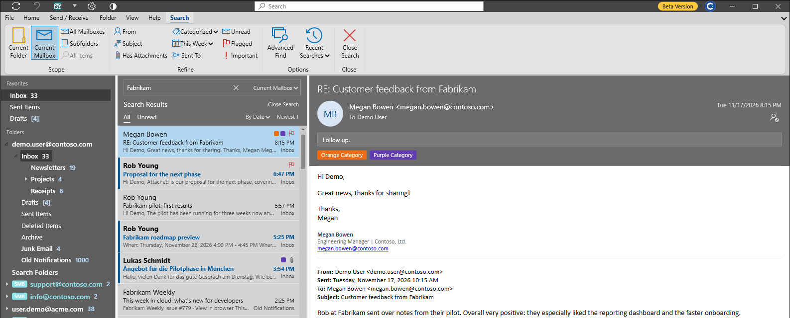
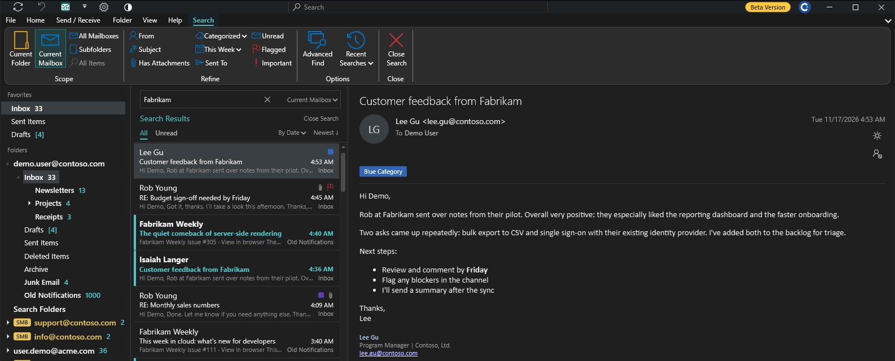

- Instant search as you type, in the current folder, subfolders, the current mailbox or all mailboxes.
- Refine: From, Subject, Sent To, Has Attachments, Unread, Flagged, Important, Categorized and dates.
- Advanced Find (Ctrl+Shift+F) and Recent Searches.




- Search Folders that Exchange keeps up to date, so Outlook sees them too, from Outlook’s list: mail from or to certain people, sent directly to you, large or old mail, mail with certain words, and more.
- Find Related messages in a conversation or from a sender, and Find (F4) in a message.
- Search the calendar a year back and a year ahead, and filter contacts as you type.
Missing something you used in Outlook? Choose Help → Suggest a Feature in the app. Found a bug? Choose Help → Report a Bug.